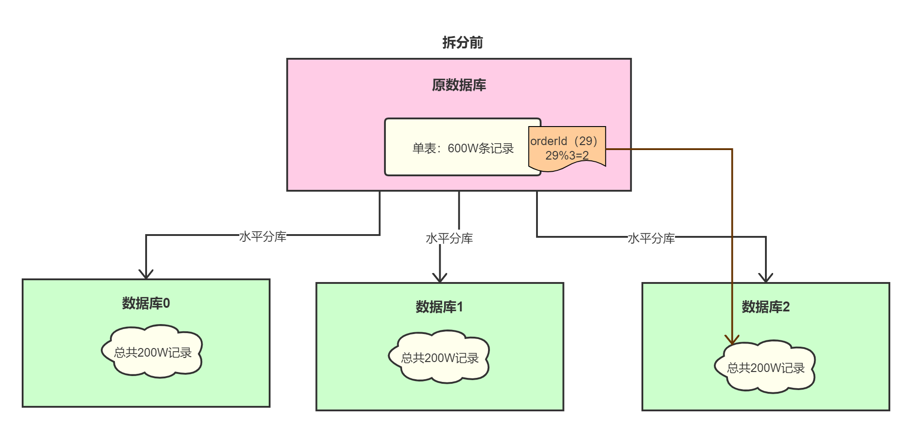
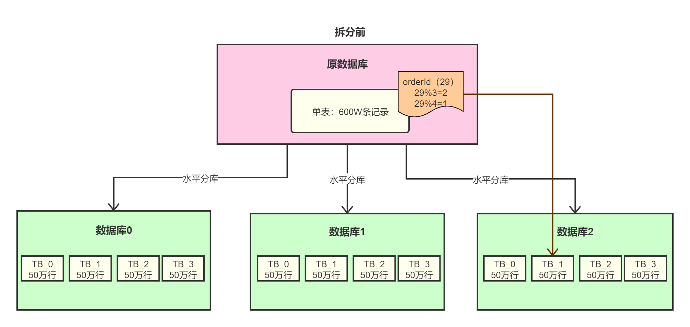
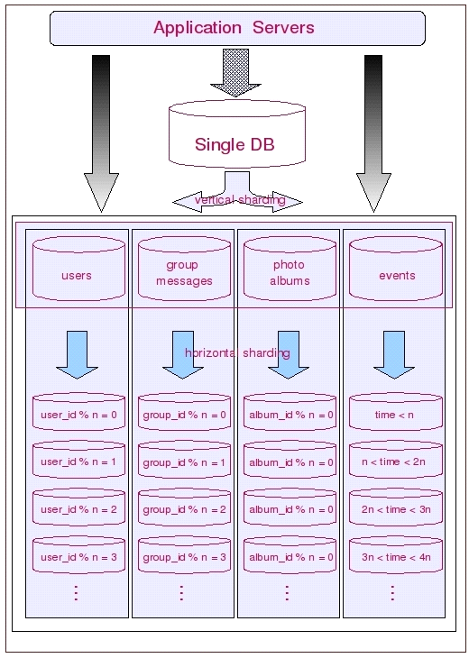
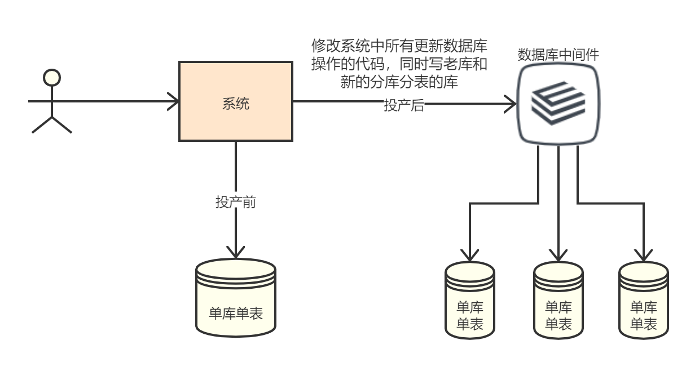
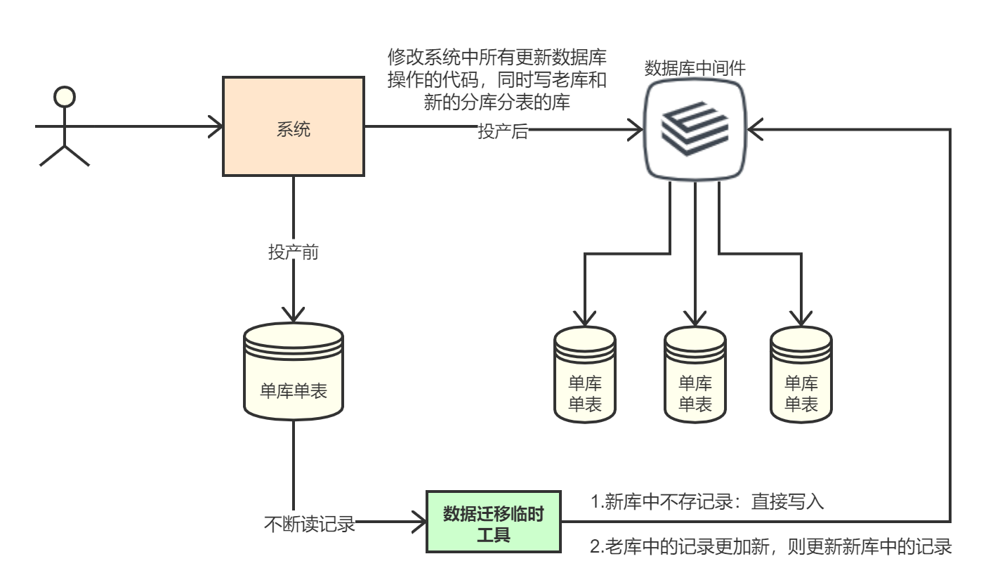
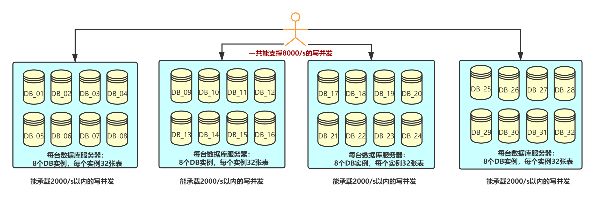
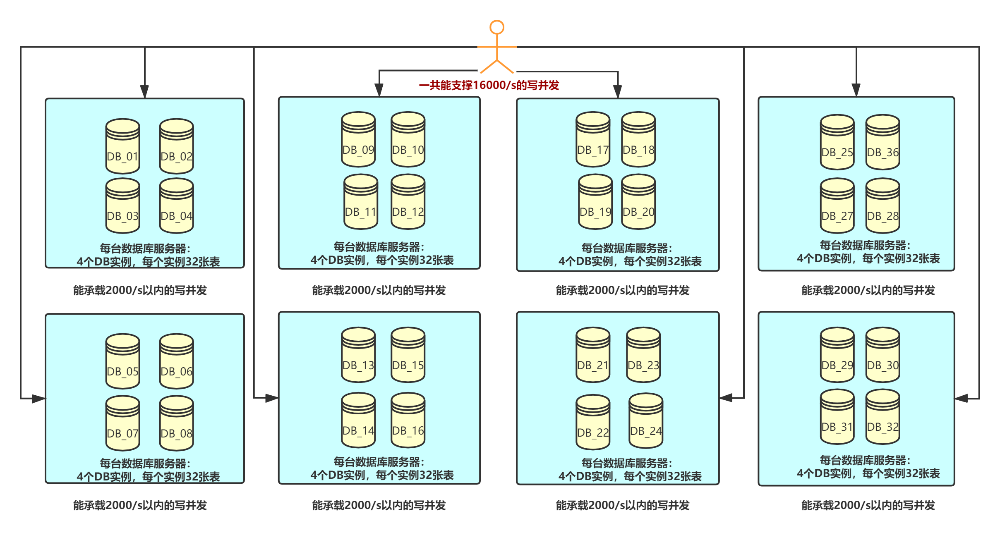

分布式基础（二三）——分布式理论之高性能：分库分表
一、简介
上一篇分布式理论之高性能：读写分离中，我们介绍了读写分离，其主要目的是为了分散了服务器读写操作的压力。但“读写分离”并不能分散存储压力，当数据量达到千万甚至上亿条的时候，单台服务器的存储能力会成为系统的瓶颈，主要体现在这几个方面：
数据量太大，读写的性能会下降，即使有索引，索引也会变得很大，性能同样会下降；
数据文件会变得很大，数据库备份和恢复需要耗费很长时间；
数据文件越大，极端情况下丢失数据的风险越高（例如，机房火灾导致数据库主备机都发生故障）。
基于上述原因，单台数据库服务器存储的数据量不能太大，需要控制在一定的范围内。为了满足业务数据存储的需求，就需要将存储分散到多台数据库服务器上。“分库分表”就是一种常见的分散存储方法，其中包括“分库”和“分表”两大类。
我们曾在分布式基础（十四）——分布式理论之高可用：集群中，从高可用的角度出发介绍过数据分片，本文则是高性能角度出发，介绍另一种针对数据库的数据分片方案。
1.1 示例
我们先通过一个示例来看下分库分表。假如我们现在有个系统，用户数达到1亿，每天活跃用户数上千万，每日单表数据量新增50万条，最后单库单表的数据量已经达到了600万。一般来说，Mysql单表数据量达到几百万的时候，性能就会变差，就得考虑分表了。
接下来，我们来看下如何通过水平分库+分表来解决这个问题。假设当前单库单表有600万条记录，我们先水平拆分成3个库（每个库的结构完全相同），那每个库总共包含200W条记录。
我们可以根据记录的特征值（比如订单ID）与库数进行hash取余——orderId % DB_N，那每条记录就映射到了指定的库中，比如对于orderId=29的记录，29%3=2，那就映射到数据库2：

然后，在每个库内进行水平分表，拆成4个表（每个表的结构完全相同），那每张表总共包含50W条记录。
我们再根据记录的特征值与表数进行hash取余——orderId % TB_N，那每条记录就映射到了指定的表中，比如对于orderId=29的记录，29%4=1，那就映射到表1：

最终，每个表的数据量从原来的单表600W缩小到50W，SQL的执行效率可以增加好几倍。同时，能够承载的QPS从原来的单库2000QPS扩展到了6000QPS。
二、分库
分库一般是从业务模块的角度出发，将数据分散到不同的数据库服务器。例如，一个简单的商户收单系统，包括商户、订单、渠道方三个业务模块，我们可以将商户数据、订单数据、渠道方数据分开存放到三台不同的数据库服务器上，而不是将所有数据都放在一台数据库服务器上。下图是分库的基本示意图：

从上图可以看到，分库分为垂直分库和水平分库：
- 垂直分库：以表为维度，按照业务归属将不同的表拆分到不同的数据库中，所有库的并集是全量数据；一般来说，垂直拆分是在数据库模型设计的时候就做好了，并不常用。
- 水平分库：以字段为维度，按照一定策略（hash、range等），将一个库中的数据拆分到多个库中，每个库的结构都一样但数据没有交集，比如我们示例中的按照orderId进行水平分库就是这种方式。
水平分库的意义，就是将数据均匀放更多的库里，然后用多个库来抗更高的并发，还有就是用多个库的存储容量来进行扩容。
虽然业务分库能够分散存储和访问压力，但同时也带来了新的问题。
2.1 join问题
业务分库后，原本在同一个数据库中的表分散到不同数据库中，导致无法使用 SQL 的 join 查询，即“跨库join问题”。由于分库后数据分散在多个不同的数据库中，无法做跨库 join 查询，只能分多次进行多表查询，这样实现就比简单的 join 查询要复杂一些。
虽然很多数据库中间件，比如sharding-jdbc、Mycat都提供了跨库聚合join的功能，但考虑到性能，一般不建议使用，因为跨库join不仅会增加CPU负担并且将不同的库/表耦合在一起。需要关联数据，应当在业务层分别获取主表和扩展表的数据，然后用关联字段遍历得到全部数据。
2.2 事务问题
业务分库后，表分散到不同的数据库中，无法通过单个DB的事务统一修改。虽然数据库厂商提供了一些分布式事务的解决方案（例如，MySQL 的 XA），但性能实在太低，与高性能存储的目标相违背。
例如，用户下订单时需要扣减商品库存，如果订单数据和商品数据在同一个数据库中，可以简单的使用数据库事务来保证扣减商品库存和生成订单的操作要么都成功要么都失败；但分库后就无法使用单数据库的事务了，需要业务程序自己来模拟实现事务的功能。常见的分布式事务实现方案可以参考本系列的分布式理论之分布式事务。
2.3 成本问题
业务分库同时也带来了成本的代价，本来 1 台服务器搞定的事情，现在要 3 台，如果考虑备份，那就是 2 台变成了 6 台。
2.4 最佳实践
基于上述原因，对于业务量评估不是非常大、初期业务模式并不十分明确的系统，并不建议一开始就进行分库，主要有几个原因：
初创业务存在很大的不确定性，业务不一定能发展起来，业务开始的时候并没有真正的存储和访问压力，业务分库并不能为业务带来价值；
业务分库后，表之间的 join 查询、数据库事务无法简单实现，增加了额外复杂度；
业务分库后，因为不同的数据要读写不同的数据库，代码中需要增加根据数据类型映射到不同数据库的逻辑，增加了工作量。而业务初创期间最重要的是快速实现、快速验证，业务分库会拖慢业务节奏。
有的架构师可能会想：如果业务真的发展很快，岂不是很快就又要进行业务分库了？那为何不一开始就设计好呢？
首先，这里的“如果”事实上发生的概率比较低，做 10 个业务有1个业务能活下去就很不错了，更何况快速发展，和中彩票的概率差不多。如果业务真的发展很快，后面进行业务分库也不迟，因为只要在表结构设计环节多投入精力，做到良好的表结构设计，后面分库也并不困难。
其次，单台数据库服务器的性能其实也没有想象的那么弱，一般来说，单台Mysql数据库服务器能够支撑 10 万用户量量级的业务，初创业务从 0 发展到 10 万级用户，并不是想象得那么快。所以，初期应该尽量先从高可用角度去保证系统的稳定性。
对于业务成熟的大公司来说，用户规模往往是海量的，由于已经有了业务分库的成熟解决方案，所以即使是尝试性的新业务，也最好在业务开始设计时就考虑业务分库。
三、分表
分库主要是从业务维度，将不同业务数据分散到不同的数据库服务器。但如果业务继续发展，同一业务的单表数据也会达到单台数据库服务器的处理瓶颈。例如，在大型的支付系统中，单日的订单规模可能会达到亿级，如果全部存放在一台数据库服务器的一张表中，肯定是无法满足性能要求的，此时就需要对单表数据进行拆分。
单表数据拆分有两种方式：垂直分表和水平分表。示意图如下：

- 垂直分表：以字段为维度，将表中字段拆到不同的表（主表和扩展表）中，每个表的结构不一样；
- 水平分表：以字段为依据，按照一定策略（hash、range等），将一个表中的数据拆分到多个表中，每个表的结构都一样，我们最初的示例中就是按照orderId进行水平分表。
垂直分表，一般来说会将访问频率很高的字段放到一个表里去，然后将较多的访问频率很低的字段放到另外一个表里去。因为数据库是有缓存的，你访问频率高的数据行中的字段越少，就可以在缓存里缓存更多的行，性能就越好。另外，垂直拆分一般在表结构设计的时候就做好了，并不常用。
单表进行切分后，是否要将切分后的多个表分散在不同的数据库服务器中，可以根据实际的切分效果来确定，并不强制要求单表切分为多表后一定要分散到不同数据库中。原因在于：分表后即使新表在同一个数据库服务器中，也可能带来可观的性能提升，如果性能能够满足业务要求，是可以不拆分到多台数据库服务器的，毕竟分库也会引入很多复杂性；如果单表拆分为多表后，单台服务器依然无法满足性能要求，那就不得不再次进行业务分库的设计了。
分表能够有效地分散存储压力和带来性能提升，但和分库一样，也会引入各种复杂性。
3.1 路由问题
一般来说，单表数据量达到千万级别时，就需要进行水平分表了。水平分表后，某条数据具体属于哪个切分后的子表，需要增加路由算法进行计算，这个算法会引入一定的复杂性。常见的路由算法有：
范围路由
范围路由，就是选取有序的数据列（例如，整形、时间戳等）作为路由的条件，不同分段（range）分散到不同的数据库表中，有点类似于分布式理论之可扩展：Range Based。
以用户 ID 为例，路由算法可以按照 1000000 的范围大小进行分段，1 ~ 999999 放到数据库 1 的表中，1000000 ~ 1999999 放到数据库 2 的表中，以此类推。
复杂点：
主要体现在分段大小的选取上，分段太小会导致切分后子表数量过多，增加维护复杂度；分段太大可能会导致单表依然存在性能问题，一般建议分段大小在 100 万至 2000 万之间，具体需要根据业务选取合适的分段大小。
优点：
可以随着数据的增加平滑地扩充新的表。例如，现在的用户是 100 万，如果增加到 1000 万，只需要增加新的表就可以了，原有的数据不需要动。
缺点：
分布不均匀，假如按照 1000 万来进行分表，有可能某个分段实际存储的数据量只有 1000 条，而另外一个分段实际存储的数据量有 900 万条。
Hash路由
Hash路由，就是选取某个列（或者某几个列组合也可以）的值进行 Hash 运算，然后根据 Hash 结果分散到不同的数据库表中。
以用户 ID 为例，假如我们一开始就规划了 10 个数据库表，路由算法可以简单地用 user_id % 10 的值来表示数据所属的数据库表编号，ID 为 985 的用户放到编号为 5 的子表中，ID 为 10086 的用户放到编号为 6 的字表中。
复杂点：
主要体现在初始表数量的选取上，表数量太多维护比较麻烦，表数量太少又可能导致单表性能存在问题。而用了 Hash 路由后，增加子表数量是非常麻烦的，所有数据都要重分布。
优点：
子表分布比较均匀
缺点：
扩充新表很麻烦，所有数据都要重分布。
配置路由
配置路由，就是用一张独立的路由表来记录原表到子表的路由信息。
以用户 ID 为例，我们新增一张 user_router 表，这个表包含 user_id 和 table_id 两列，根据 user_id 就可以查询对应的 table_id。
优点：
配置路由设计简单，使用起来非常灵活，尤其是在扩充表的时候，只需要迁移指定的数据，然后修改路由表就可以了。
缺点：
必须多查询一次，会影响整体性能；而且路由表本身如果太大（例如，几亿条数据），性能同样可能成为瓶颈，如果我们再次将路由表分库分表，则又面临一个死循环式的路由算法选择问题。
3.2 join问题
水平分表后，数据分散在多个表中，如果需要与其他表进行 join 查询，需要在业务代码或者数据库中间件中进行多次 join 查询，然后将结果合并。
3.3 count问题
水平分表后，虽然物理上数据分散到多个表中，但某些业务逻辑上还是会将这些表当作一个表来处理。例如，获取记录总数用于分页或者展示，水平分表前用一个 count() 就能完成的操作，在分表后就没那么简单了。常见的处理方式有下面两种：
count相加
具体做法是在业务代码或者数据库中间件中对每个子表进行 count() 操作，然后将结果相加。这种方式实现简单，缺点就是性能比较低。例如，水平分表后切分为 20 张表，则要进行 20 次 count 操作，如果串行的话，可能需要几秒钟才能得到结果。
记录数表
具体做法是新建一张表，假如表名为“记录数表”，包含 table_name、row_count 两个字段，每次插入或者删除子表数据成功后，都更新“记录数表”。
优点：
性能要大大优于 count 相加的方式，因为只需要一次简单查询就可以获取数据。
缺点：
对子表的操作要同步操作“记录数表”，如果有一个业务逻辑遗漏了，数据就会不一致；且针对“记录数表”的操作和针对子表的操作无法放在同一事务中进行处理，异常的情况下会出现操作子表成功了而操作记录数表失败，同样会导致数据不一致。
记录数表的方式也增加了数据库的写压力，因为每次针对子表的 insert 和 delete 操作都要 update 记录数表，所以对于一些不要求记录数实时保持精确的业务，也可以通过后台定时更新记录数表。
定时更新实际上就是“count() 相加”和“记录数表”的结合，即定时通过 count() 相加计算表的记录数，然后更新记录数表中的数据。
3.3 order by问题
水平分表后，数据分散到多个子表中，排序操作无法在数据库中完成，只能由业务代码或者数据库中间件分别查询每个子表中的数据，然后汇总进行排序。
四、数据迁移
分库分表很多时候都是针对线上正在运行的系统，那么如何让系统从单库单表动态得切换到分库分表上？如何设计可以动态扩容缩容的分库分表方案呢？我们通过一个示例来看下整个过程。
假设已经有一个单库单表的系统在线上在跑，单表有600万数据 。我们已经设计好了一套分库分表方案——水平分3个库，每个库里水平分4个表，即每个表50万的数据量，见第一节示例。
4.1 停机迁移
顾名思义，就是系统停机，一般找个凌晨时间，然后用一个之前写好的一次性导数工具将单库单表的数据读出来，写到分库分表里面去。导数完了之后，修改系统的数据库连接配置啥的，一般还会包括代码和SQL的些许修改，最后进行验证。
但是这个方案仅仅适合一些夜间没有什么人使用的系统，对于一些核心支付系统来说，这种停机维护的方案几乎是不可接受的。笔者曾经就做过这种停机迁移，最后经历了停机数据迁移 -> 凌晨1:00没解决 -> 凌晨3:00没解决 -> 凌晨4:00没解决 -> 回滚 的整个过程，见了几次凌晨四五点的陆家嘴。
4.2 双写迁移
这个是我们常用的一种迁移方案，比较靠谱一些，不用停机，不用看上海凌晨4点的风景。
简单来说，就是改动系统代码，在所有涉及写库的地方（增删改操作），除了先对老库操作外，再加上对新库的增删改，这就是所谓双写，同时写俩库——老库和新库。

系统部署之后，由于新库数据差太远，可以用一个自己写的导数工具，读取老库数据并写到新库中。写到新库时，首先判断新库中是否已有该条记录，没有则写入，有的话判断这条记录最后修改时间（标准规范的表结构设计中，都会包含一个最后修改时间字段），如果老库中的记录更加新，则覆盖新库中的记录。

当数据迁移临时工具针对这600w记录执行完一轮后，有可能数据还是存在不一致，那么就再做一轮校验，比对新和老库每个表的每条数据，如果有不一样的，就针对那些不一样的，从老库读数据再次判断是否更新到新库中。反复循环，直到两个库每个表的数据都完全一致为止。（这个过程可能会持续好几天，直到某个凌晨几乎每什么新数据进来，那么一般新老库就完全一致了）
最后，当数据完全一致后，基于仅使用分库分表的最新代码重新部署系统就可以了。
五、动态伸缩
水平分库分表时，涉及库表的动态扩展和收缩，比如我们之前的示例中，从包含600万数据的单库单表水平拆分成3个库（每个库包含4张表，每张表50万数据）。假如此时日交易量持续上升，需要扩容成6个库，每个库需要12个表，怎么来动态增加更多库和表呢？
5.1 停机扩容
这个方案就跟停机迁移一样，步骤也几乎一致，唯一不同点就是自己写的导数工具的逻辑不同。但是最好别这么玩儿，有点不太靠谱，因为既然分库分表了，就说明数据量实在是太大了，可能多达数十亿条，这么玩儿很可能会出问题。
单库单表迁移到分库分表的时候，由于单表数据量并不是很大，最大也就一两千万 ，写个工具，多弄几台机器并行跑，1、2个小时也就导完了。 但是3个库，共12个表，数据量可能亿级，导入操作可能耗时数个小时，而且导完数据，还要进行系统部署、验证，一个通宵估计都搞不完。
5.2 事前规划
所谓事前规划，就是在系统设计阶段就考虑好要分库分表的数量。这也是目前最常用的一种动态扩容方案。
比如，XX银行的核心支付平台，一开始上来就是32个库，每个库32个表，共1024张表。我们来估算下，看看能支撑多大的并发量和数据量。
并发量：
假设每个库都单独部署在一台服务器上，承载1500的写并发，32个库就是32 * 1500 = 48000的写并发，前面再加一个MQ，用于削峰，假设每秒写入MQ 8万条数据，每秒消费4万条数据。接近5w的写并发，足够应付99%的公司的业务。
数据量：
假设每张表500万数据，1024张表就是50亿条数据。
我们以32个库，每个库32张表来看下具体如何扩？最初情况下，并不是每台数据库服务器上只有只有唯一一个DB实例，为了节省成本，我们可以在一台数据库服务器上部署8个DB实例，那总共需要4台数据库服务器：

如果系统运行了一段时间后，需要支撑更高的并发，只需要将原来的某台数据库服务器上的DB实例迁移到新的机器上（比如扩一倍，让每台数据库服务器只有4个DB实例）：

这样扩的好处是，只需要做DB实例的迁移，可以完全交给DBA去做。另外，对程序几乎是没有任何影响的，也不需要写工具去读就库里的数据导入到新库中，仅仅影响数据库服务器地址的配置。这样一直扩下去，最多可以扩到每台数据库服务器上只有一个DB实例。
数据路由的时候，一般通过全局流水号，比如orderId % 32 = 库编号，(orderId / 32） % 32 = 表编号，这样无论数据库服务器怎么伸缩，都不需要对路由规则进行改变。
六、数据库中间件介绍
前面几节介绍了分库分表的常见问题和方案，实际项目中，一般都会通过数据库中间件做分库分表，这里来比较下几种不同常见数据库中间件的优缺点：
| 中间件 | 介绍 |
|---|---|
| cobar | 阿里b2b团队开发和开源的，属于proxy层方案。早些年还可以用，但是最近几年都没更新了，基本没啥人用，差不多算是被抛弃的状态吧，而且不支持读写分离、存储过程、跨库join和分页等操作。 |
| TDDL | 淘宝团队开发的，属于client层方案，不支持join、多表查询等语法，就是基本的crud语法是ok的，支持读写分离。目前使用的也不多，因为还依赖淘宝的diamond配置管理系统。 |
| Atlas | 360开源的，属于proxy层方案，有一个很大的问题就是社区最新的维护都在5年前了。所以，现在用的公司基本也很少了 |
| sharding-jdbc | 当当开源的，属于client层方案。确实之前用的还比较多一些，因为SQL语法支持也比较多，没有太多限制，而且目前推出到了2.0版本，支持分库分表、读写分离、分布式id生成、柔性事务（最大努力送达型事务、TCC事务），目前社区也还一直在开发和维护，还算是比较活跃，个人认为算是一个现在也可以选择的方案 |
| Mycat | 基于cobar改造的，属于proxy层方案，支持的功能非常完善，而且目前应该是非常火的而且不断流行的数据库中间件，社区很活跃，也有一些公司开始在用了。但是确实相比于sharding jdbc来说，年轻一些，经历的锤炼少一些 |
所以综上所述，现在其实建议考量的，就是sharding-jdbc和mycat，这两个都可以去考虑使用。
sharding-jdbc这种client层方案的优点在于不用部署，运维成本低，不需要代理层的二次转发请求，性能很高，但是如果遇到升级啥的需要各个系统都重新升级版本再发布，各个系统都需要耦合sharding-jdbc的依赖；
mycat这种proxy层方案的缺点在于需要部署，自己及运维一套中间件，运维成本高，但是好处在于对于各个项目是透明的，如果遇到升级之类的都是自己中间件那里搞就行了。
通常来说，这两个方案其实都可以选用，但是我个人建议中小型公司选用sharding-jdbc，client层方案轻便，而且维护成本低，不需要额外增派人手，而且中小型公司系统复杂度会低一些，项目也没那么多；
但是中大型公司最好还是选用mycat这类proxy层方案，因为可能大公司系统和项目非常多，团队很大，人员充足，那么最好是专门弄个人来研究和维护mycat，然后大量项目直接透明使用即可。
七、总结
本文介绍了数据库分库分表的基本原理和常见问题，与数据库读写分离类似，分库分表具体的实现方式也是有“程序代码封装”和“中间件封装”两种，但实现会更复杂。
读写分离只要识别 SQL 操作是读操作还是写操作，通过简单的判断 SELECT、UPDATE、INSERT、DELETE 几个关键字就可以做到，而分库分表的实现除了要判断操作类型外，还要判断 SQL 中具体需要操作的表、操作函数（例如 count 函数)、order by、group by 操作等，然后再根据不同的操作进行不同的处理。例如 order by 操作，需要先从多个库查询到各个库的数据，然后再重新 order by 才能得到最终的结果。
所以目前分库分表和读写分离一样，大都引入数据库中间件来屏蔽细节，关于如何通过数据库中间件实现分库分表，我们会在进阶篇中详细介绍。